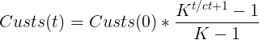
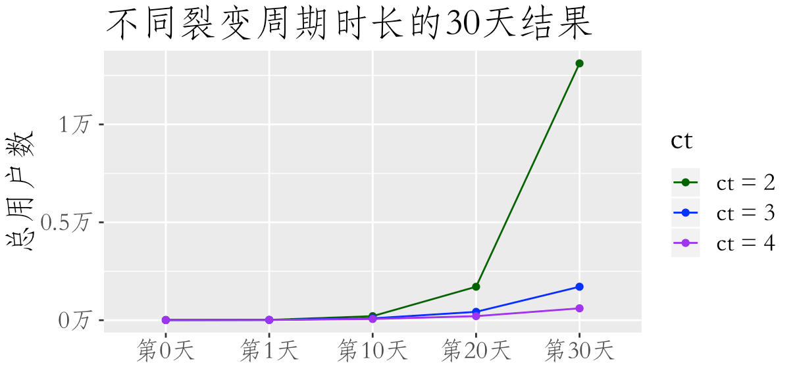
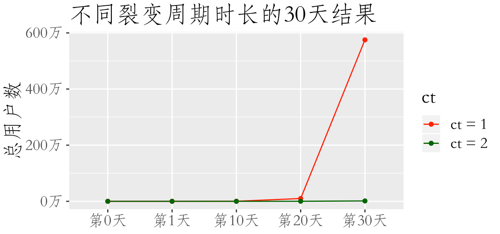

<!DOCTYPE html>
<html lang=zh>
<head>
    <!-- hexo-inject:begin --><!-- hexo-inject:end --><!-- so meta -->
    <meta charset="utf-8">
    <meta http-equiv="X-UA-Compatible" content="IE=edge">
    <meta name="HandheldFriendly" content="True">
    <meta name="viewport" content="width=device-width, initial-scale=1, maximum-scale=1" />
    <meta name="description" content="本系列的上一篇文章 介绍了一个纯裂变模型。  我们在本篇加入一个新的变量：裂变周期的时长。直觉告诉我们，裂变周期越短，裂变强度越大。但是，这个强度究竟有多大呢？  我让这个问题再精确一些，假设有2个产品，A 产品裂变周期只有1天，B 产品裂变周期是2天，30天后，A 产品的用户数会是 B 产品的几倍？  ">
<meta property="og:type" content="article">
<meta property="og:title" content="增长黑客系列之2：升级版裂变模型">
<meta property="og:url" content="http://yoursite.com/2019/05/01/2019-05-01-userGrow-2/index.html">
<meta property="og:site_name" content="商业与数据">
<meta property="og:description" content="本系列的上一篇文章 介绍了一个纯裂变模型。  我们在本篇加入一个新的变量：裂变周期的时长。直觉告诉我们，裂变周期越短，裂变强度越大。但是，这个强度究竟有多大呢？  我让这个问题再精确一些，假设有2个产品，A 产品裂变周期只有1天，B 产品裂变周期是2天，30天后，A 产品的用户数会是 B 产品的几倍？  ">
<meta property="og:locale" content="zh_CN">
<meta property="og:image" content="http://yoursite.com/blog/2019/05/01/2019-05-01-userGrow-2/zombie.jpg">
<meta property="og:image" content="http://yoursite.com/2019/05/01/2019-05-01-userGrow-2/formula.png">
<meta property="og:image" content="http://yoursite.com/2019/05/01/2019-05-01-userGrow-2/plot_0.png">
<meta property="og:image" content="http://yoursite.com/2019/05/01/2019-05-01-userGrow-2/plot_1.png">
<meta property="article:published_time" content="2019-05-01T09:39:14.000Z">
<meta property="article:modified_time" content="2020-01-18T10:14:37.690Z">
<meta property="article:author" content="Yu Qin">
<meta name="twitter:card" content="summary">
<meta name="twitter:image" content="http://yoursite.com/blog/2019/05/01/2019-05-01-userGrow-2/zombie.jpg">
    
    
        
          
              <link rel="shortcut icon" href="/blog/images/favicon.ico">
          
        
        
          
            <link rel="icon" type="image/png" href="/blog/images/favicon-192x192.png" sizes="192x192">
          
        
        
          
            <link rel="apple-touch-icon" sizes="180x180" href="/blog/images/apple-touch-icon.png">
          
        
    
    <!-- title -->
    <title>增长黑客系列之2：升级版裂变模型</title>
    <!-- styles -->
    
<link rel="stylesheet" href="/blog/css/style.css">

    <!-- persian styles -->
    
      
<link rel="stylesheet" href="/blog/css/rtl.css">

    
    <!-- rss -->
    
    
<meta name="generator" content="Hexo 4.2.0"><link rel="alternate" href="/blog/atom.xml" title="商业与数据" type="application/atom+xml"><!-- hexo-inject:begin --><!-- hexo-inject:end -->
</head>

<body class="max-width mx-auto px3 ltr">    
      <!-- hexo-inject:begin --><!-- hexo-inject:end --><div id="header-post">
  <a id="menu-icon" href="#"><i class="fas fa-bars fa-lg"></i></a>
  <a id="menu-icon-tablet" href="#"><i class="fas fa-bars fa-lg"></i></a>
  <a id="top-icon-tablet" href="#" onclick="$('html, body').animate({ scrollTop: 0 }, 'fast');" style="display:none;"><i class="fas fa-chevron-up fa-lg"></i></a>
  <span id="menu">
    <span id="nav">
      <ul>
         
          <li><a href="/blog/">首页</a></li>
         
          <li><a href="/blog/about/">关于</a></li>
         
          <li><a href="/blog/archives/">归档</a></li>
        
      </ul>
    </span>
    <br/>
    <span id="actions">
      <ul>
        
        <li><a class="icon" href="/blog/2019/05/06/2019-05-07-userGrow-3/"><i class="fas fa-chevron-left" aria-hidden="true" onmouseover="$('#i-prev').toggle();" onmouseout="$('#i-prev').toggle();"></i></a></li>
        
        
        <li><a class="icon" href="/blog/2019/04/15/2019-04-15-ggplot%E7%B3%BB%E5%88%973/"><i class="fas fa-chevron-right" aria-hidden="true" onmouseover="$('#i-next').toggle();" onmouseout="$('#i-next').toggle();"></i></a></li>
        
        <li><a class="icon" href="#" onclick="$('html, body').animate({ scrollTop: 0 }, 'fast');"><i class="fas fa-chevron-up" aria-hidden="true" onmouseover="$('#i-top').toggle();" onmouseout="$('#i-top').toggle();"></i></a></li>
        <li><a class="icon" href="#"><i class="fas fa-share-alt" aria-hidden="true" onmouseover="$('#i-share').toggle();" onmouseout="$('#i-share').toggle();" onclick="$('#share').toggle();return false;"></i></a></li>
      </ul>
      <span id="i-prev" class="info" style="display:none;">上一篇</span>
      <span id="i-next" class="info" style="display:none;">下一篇</span>
      <span id="i-top" class="info" style="display:none;">返回顶部</span>
      <span id="i-share" class="info" style="display:none;">分享文章</span>
    </span>
    <br/>
    <div id="share" style="display: none">
      <ul>
  <li><a class="icon" href="http://www.facebook.com/sharer.php?u=http://yoursite.com/2019/05/01/2019-05-01-userGrow-2/" target="_blank" rel="noopener"><i class="fab fa-facebook " aria-hidden="true"></i></a></li>
  <li><a class="icon" href="https://twitter.com/share?url=http://yoursite.com/2019/05/01/2019-05-01-userGrow-2/&text=增长黑客系列之2：升级版裂变模型" target="_blank" rel="noopener"><i class="fab fa-twitter " aria-hidden="true"></i></a></li>
  <li><a class="icon" href="http://www.linkedin.com/shareArticle?url=http://yoursite.com/2019/05/01/2019-05-01-userGrow-2/&title=增长黑客系列之2：升级版裂变模型" target="_blank" rel="noopener"><i class="fab fa-linkedin " aria-hidden="true"></i></a></li>
  <li><a class="icon" href="https://pinterest.com/pin/create/bookmarklet/?url=http://yoursite.com/2019/05/01/2019-05-01-userGrow-2/&is_video=false&description=增长黑客系列之2：升级版裂变模型" target="_blank" rel="noopener"><i class="fab fa-pinterest " aria-hidden="true"></i></a></li>
  <li><a class="icon" href="mailto:?subject=增长黑客系列之2：升级版裂变模型&body=Check out this article: http://yoursite.com/2019/05/01/2019-05-01-userGrow-2/"><i class="fas fa-envelope " aria-hidden="true"></i></a></li>
  <li><a class="icon" href="https://getpocket.com/save?url=http://yoursite.com/2019/05/01/2019-05-01-userGrow-2/&title=增长黑客系列之2：升级版裂变模型" target="_blank" rel="noopener"><i class="fab fa-get-pocket " aria-hidden="true"></i></a></li>
  <li><a class="icon" href="http://reddit.com/submit?url=http://yoursite.com/2019/05/01/2019-05-01-userGrow-2/&title=增长黑客系列之2：升级版裂变模型" target="_blank" rel="noopener"><i class="fab fa-reddit " aria-hidden="true"></i></a></li>
  <li><a class="icon" href="http://www.stumbleupon.com/submit?url=http://yoursite.com/2019/05/01/2019-05-01-userGrow-2/&title=增长黑客系列之2：升级版裂变模型" target="_blank" rel="noopener"><i class="fab fa-stumbleupon " aria-hidden="true"></i></a></li>
  <li><a class="icon" href="http://digg.com/submit?url=http://yoursite.com/2019/05/01/2019-05-01-userGrow-2/&title=增长黑客系列之2：升级版裂变模型" target="_blank" rel="noopener"><i class="fab fa-digg " aria-hidden="true"></i></a></li>
  <li><a class="icon" href="http://www.tumblr.com/share/link?url=http://yoursite.com/2019/05/01/2019-05-01-userGrow-2/&name=增长黑客系列之2：升级版裂变模型&description=&lt;img src=&#34;/blog/2019/05/01/2019-05-01-userGrow-2/zombie.jpg&#34; class=&#34;&#34; title=&#34;僵尸&#34;&gt;
&lt;a href=&#34;/blog/2019/03/05/2019-03-05-userGrow-1/&#34; title=&#34;本系列的上一篇文章&#34;&gt;本系列的上一篇文章&lt;/a&gt; 介绍了一个纯裂变模型。

我们在本篇加入一个新的变量：裂变周期的时长。直觉告诉我们，裂变周期越短，裂变强度越大。但是，这个强度究竟有多大呢？

我让这个问题再精确一些，假设有2个产品，A 产品裂变周期只有1天，B 产品裂变周期是2天，30天后，A 产品的用户数会是 B 产品的几倍？

"><i class="fab fa-tumblr " aria-hidden="true"></i></a></li>
  <li><a class="icon" href="https://news.ycombinator.com/submitlink?u=http://yoursite.com/2019/05/01/2019-05-01-userGrow-2/&t=增长黑客系列之2：升级版裂变模型" target="_blank" rel="noopener"><i class="fab fa-hacker-news " aria-hidden="true"></i></a></li>
</ul>

    </div>
    <div id="toc">
      <ol class="toc"><li class="toc-item toc-level-2"><a class="toc-link" href="#丧尸的世界为什么那么刺激"><span class="toc-number">1.</span> <span class="toc-text">丧尸的世界为什么那么刺激</span></a></li><li class="toc-item toc-level-2"><a class="toc-link" href="#新的模型"><span class="toc-number">2.</span> <span class="toc-text">新的模型</span></a></li><li class="toc-item toc-level-2"><a class="toc-link" href="#数据例子"><span class="toc-number">3.</span> <span class="toc-text">数据例子</span></a></li><li class="toc-item toc-level-2"><a class="toc-link" href="#这个模型的实践意义"><span class="toc-number">4.</span> <span class="toc-text">这个模型的实践意义</span></a></li><li class="toc-item toc-level-2"><a class="toc-link" href="#更多阅读"><span class="toc-number">5.</span> <span class="toc-text">更多阅读</span></a></li></ol>
    </div>
  </span>
</div>

    
    <div class="content index py4">
        
        <article class="post" itemscope itemtype="http://schema.org/BlogPosting">
  <header>
    
    <h1 class="posttitle" itemprop="name headline">
        增长黑客系列之2：升级版裂变模型
    </h1>


    <div class="meta">
      <span class="author" itemprop="author" itemscope itemtype="http://schema.org/Person">
        <span itemprop="name">商业与数据</span>
      </span>
      
    <div class="postdate">
      
        <time datetime="2019-05-01T09:39:14.000Z" itemprop="datePublished">2019-05-01</time>
        
      
    </div>


      

      

    </div>
  </header>
  

  <div class="content" itemprop="articleBody">
    
<a href="/blog/2019/03/05/2019-03-05-userGrow-1/" title="本系列的上一篇文章">本系列的上一篇文章</a> 介绍了一个纯裂变模型。

我们在本篇加入一个新的变量：裂变周期的时长。直觉告诉我们，裂变周期越短，裂变强度越大。但是，这个强度究竟有多大呢？

我让这个问题再精确一些，假设有2个产品，A 产品裂变周期只有1天，B 产品裂变周期是2天，30天后，A 产品的用户数会是 B 产品的几倍？

<a id="more"></a>
<h2 id="丧尸的世界为什么那么刺激"><a href="#丧尸的世界为什么那么刺激" class="headerlink" title="丧尸的世界为什么那么刺激"></a>丧尸的世界为什么那么刺激</h2><p>在去看枯燥的公式和代码之前，我先谈谈有趣的丧尸。丧尸题材在现代社会的风靡是个有意思的现象，我把这个想象叫做“双重逃避”。</p>
<p>第一重逃避是现代人对充满压力的生活的逃避：通过丧尸电影和丧尸游戏，人们沉浸到了一个紧张刺激的世界，让我们忘掉日常生活的种种压力。第二重逃避：我们在丧尸游戏和电影里逃避着无处不在的丧尸。所以，为了逃避现实，我们选择在虚拟的世界里逃避丧尸。</p>
<p>为什么逃避丧尸是个那么刺激的事情呢？一种解答是：丧尸很致命。但这个答案不够完美，因为致命的东西很多，比如哥斯拉和异形就比丧尸致命得多。如果致命程度是某个题材火爆的原因，我们应该看到哥斯拉和异形更流行。</p>
<p>我觉得真正的原因是：丧尸有非常强的病毒传播能力。从第1只丧尸诞生到丧尸围城，用不了几天时间（额外提问：这现实吗？）。</p>
<p>我们在上一篇系列文章里提到了两个核心变量：</p>
<ul>
<li>邀请数量</li>
<li>感染率</li>
</ul>
<p>在丧尸的世界里， 丧尸是非常热情的“种子用户”，它见到人就会发出“邀请”，而且感染率100%。所以丧尸有非常高的<strong>病毒因子</strong>。</p>
<p>但这个指标还不足以描述丧尸的可怕（或魅力）。丧尸电影里最刺激的情节是，男主角的朋友/爱人被咬了之后，1分钟内就会变成丧尸，然后会立刻开始进攻其他人类。换句话说，僵尸把人变成僵尸的周期非常快。在增长模型里，这个参数叫做“<strong>周期时长</strong>”。僵尸有非常短的周期时长。</p>
<p>如果被僵尸咬了之后需要48个小时才会变异，僵尸电影就没那么有意思了。</p>
<h2 id="新的模型"><a href="#新的模型" class="headerlink" title="新的模型"></a>新的模型</h2><p>在新的模型里，我们开始考虑一个周期的时间长度，这个变量叫做简称为 ct。</p>
<p>所有变量如下：</p>
<ul>
<li>初始用户：custs(0)</li>
<li>周期时长：ct</li>
<li>人均邀请数 i</li>
<li>感染率 Conv%</li>
</ul>
<p>我们想要计算的指标是：第 t 天时，总的用户数是多少，这个变量是 custs(t)。</p>
<p>我们仍然维持上一篇文章的核心假设：只有新用户会发出邀请。</p>
<p>我从风险投资人 David Skok 的博客里找到了计算第 t 天总用户量的公式：</p>
<p></p>
<p>公式里的 K = conv% * i</p>
<p>根据上面的公式，我们的 R 代码如下：</p>
<figure class="highlight r"><table><tbody><tr><td class="gutter"><pre><span class="line">1</span><br><span class="line">2</span><br><span class="line">3</span><br><span class="line">4</span><br><span class="line">5</span><br></pre></td><td class="code"><pre><span class="line">get_cust_t &lt;- <span class="keyword">function</span>(cust_0, i, conv, ct, t) {</span><br><span class="line">  k_coef &lt;- i * conv</span><br><span class="line">  cust_t &lt;- cust_0 * ( k_coef ^ (t/ct + <span class="number">1</span>) - <span class="number">1</span>) / ( k_coef - <span class="number">1</span>)</span><br><span class="line">  <span class="keyword">return</span>(cust_t)</span><br><span class="line">}</span><br></pre></td></tr></tbody></table></figure>
<h2 id="数据例子"><a href="#数据例子" class="headerlink" title="数据例子"></a>数据例子</h2><p>当 ct = 1 时，一天就能完成一次裂变。我们想研究的问题是，当裂变时长分别等于 1、2、3、4 时，30天后的总用户数会有什么样的差距。</p>
<p>结果如下图：</p>
<div class="table-container">
<table>
<thead>
<tr>
<th style="text-align:left"></th>
<th style="text-align:center">第0天</th>
<th style="text-align:center">第1天</th>
<th style="text-align:center">第10天</th>
<th style="text-align:center">第20天</th>
<th style="text-align:center">第30天</th>
</tr>
</thead>
<tbody>
<tr>
<td style="text-align:left">ct = 1</td>
<td style="text-align:center">10</td>
<td style="text-align:center">25</td>
<td style="text-align:center">1710</td>
<td style="text-align:center">99738</td>
<td style="text-align:center">5752512</td>
</tr>
<tr>
<td style="text-align:left">ct = 2</td>
<td style="text-align:center">10</td>
<td style="text-align:center">17</td>
<td style="text-align:center">208</td>
<td style="text-align:center">1710</td>
<td style="text-align:center">13117</td>
</tr>
<tr>
<td style="text-align:left">ct = 3</td>
<td style="text-align:center">10</td>
<td style="text-align:center">14</td>
<td style="text-align:center">96</td>
<td style="text-align:center">428</td>
<td style="text-align:center">1710</td>
</tr>
<tr>
<td style="text-align:left">ct = 4</td>
<td style="text-align:center">10</td>
<td style="text-align:center">13</td>
<td style="text-align:center">63</td>
<td style="text-align:center">208</td>
<td style="text-align:center">608</td>
</tr>
</tbody>
</table>
</div>
<p>天壤之别。</p>
<p>如果数字还不够直观的话，我们就看看图片。</p>
<p>我先画出了 ct = 2、3、4 时的图片：</p>
<p></p>
<p>看上去 ct = 2 时的效果是远远强于 ct = 3 和 ct = 4 的。</p>
<p>如果对比 ct = 1 和 ct = 2 呢？</p>
<p></p>
<p>真正意义上的天壤之别。在 ct = 1 的产品面前，排名老二的产品跟不存在一样。</p>
<p>我们在最开始提了一个问题：假设有2个产品，A 产品裂变周期只有1天，B 产品裂变周期是2天，30天后，A 产品的用户数会是 B 产品的几倍？答案：<strong>438倍</strong>！</p>
<p>这张图给了我两个想法：</p>
<ol>
<li>天下武功，唯快不破。在有病毒裂变能力的领域尤其如此。</li>
<li>有的时候你以为自己比后面的对手要厉害一截，但在第一名看来，你们都是一样渺小。</li>
</ol>
<h2 id="这个模型的实践意义"><a href="#这个模型的实践意义" class="headerlink" title="这个模型的实践意义"></a>这个模型的实践意义</h2><p>上一个模型告诉我们要提高<strong>用户邀请数</strong>， 要提高<strong>邀请成功率</strong>。</p>
<p>这个模型告诉我们：要缩短<strong>病毒传播的周期时长</strong>。这个话题会在接下来的系列中讨论。</p>
<p>结束这篇文章前，我们再想想下丧尸题材的常见现象：从第1只僵尸诞生到丧尸围城，只需要几天时间。现在你还会怀疑这个设定是否现实吗？</p>
<h2 id="更多阅读"><a href="#更多阅读" class="headerlink" title="更多阅读"></a>更多阅读</h2><p>增长黑客系列：</p>
<ol>
<li><a href="/blog/2019/03/05/2019-03-05-userGrow-1/" title="基础裂变模型">基础裂变模型</a> </li>
<li>升级版裂变模型（本文）</li>
<li><a href="/blog/2019/05/06/2019-05-07-userGrow-3/" title="增长的3架马车">增长的3架马车</a> 
</li>
</ol>
<p>参考：</p>
<ul>
<li><a href="https://www.forentrepreneurs.com/lessons-learnt-viral-marketing/" target="_blank" rel="noopener">David Skok: Lessons Learned – Viral Marketing</a></li>
</ul>
<script>
        document.querySelectorAll('.github-emoji')
          .forEach(el => {
            if (!el.dataset.src) { return; }
            const img = document.createElement('img');
            img.style = 'display:none !important;';
            img.src = el.dataset.src;
            img.addEventListener('error', () => {
              img.remove();
              el.style.color = 'inherit';
              el.style.backgroundImage = 'none';
              el.style.background = 'none';
            });
            img.addEventListener('load', () => {
              img.remove();
            });
            document.body.appendChild(img);
          });
      </script>
  </div>
</article>


        
          <div id="footer-post-container">
  <div id="footer-post">

    <div id="nav-footer" style="display: none">
      <ul>
         
          <li><a href="/blog/">首页</a></li>
         
          <li><a href="/blog/about/">关于</a></li>
         
          <li><a href="/blog/archives/">归档</a></li>
        
      </ul>
    </div>

    <div id="toc-footer" style="display: none">
      <ol class="toc"><li class="toc-item toc-level-2"><a class="toc-link" href="#丧尸的世界为什么那么刺激"><span class="toc-number">1.</span> <span class="toc-text">丧尸的世界为什么那么刺激</span></a></li><li class="toc-item toc-level-2"><a class="toc-link" href="#新的模型"><span class="toc-number">2.</span> <span class="toc-text">新的模型</span></a></li><li class="toc-item toc-level-2"><a class="toc-link" href="#数据例子"><span class="toc-number">3.</span> <span class="toc-text">数据例子</span></a></li><li class="toc-item toc-level-2"><a class="toc-link" href="#这个模型的实践意义"><span class="toc-number">4.</span> <span class="toc-text">这个模型的实践意义</span></a></li><li class="toc-item toc-level-2"><a class="toc-link" href="#更多阅读"><span class="toc-number">5.</span> <span class="toc-text">更多阅读</span></a></li></ol>
    </div>

    <div id="share-footer" style="display: none">
      <ul>
  <li><a class="icon" href="http://www.facebook.com/sharer.php?u=http://yoursite.com/2019/05/01/2019-05-01-userGrow-2/" target="_blank" rel="noopener"><i class="fab fa-facebook fa-lg" aria-hidden="true"></i></a></li>
  <li><a class="icon" href="https://twitter.com/share?url=http://yoursite.com/2019/05/01/2019-05-01-userGrow-2/&text=增长黑客系列之2：升级版裂变模型" target="_blank" rel="noopener"><i class="fab fa-twitter fa-lg" aria-hidden="true"></i></a></li>
  <li><a class="icon" href="http://www.linkedin.com/shareArticle?url=http://yoursite.com/2019/05/01/2019-05-01-userGrow-2/&title=增长黑客系列之2：升级版裂变模型" target="_blank" rel="noopener"><i class="fab fa-linkedin fa-lg" aria-hidden="true"></i></a></li>
  <li><a class="icon" href="https://pinterest.com/pin/create/bookmarklet/?url=http://yoursite.com/2019/05/01/2019-05-01-userGrow-2/&is_video=false&description=增长黑客系列之2：升级版裂变模型" target="_blank" rel="noopener"><i class="fab fa-pinterest fa-lg" aria-hidden="true"></i></a></li>
  <li><a class="icon" href="mailto:?subject=增长黑客系列之2：升级版裂变模型&body=Check out this article: http://yoursite.com/2019/05/01/2019-05-01-userGrow-2/"><i class="fas fa-envelope fa-lg" aria-hidden="true"></i></a></li>
  <li><a class="icon" href="https://getpocket.com/save?url=http://yoursite.com/2019/05/01/2019-05-01-userGrow-2/&title=增长黑客系列之2：升级版裂变模型" target="_blank" rel="noopener"><i class="fab fa-get-pocket fa-lg" aria-hidden="true"></i></a></li>
  <li><a class="icon" href="http://reddit.com/submit?url=http://yoursite.com/2019/05/01/2019-05-01-userGrow-2/&title=增长黑客系列之2：升级版裂变模型" target="_blank" rel="noopener"><i class="fab fa-reddit fa-lg" aria-hidden="true"></i></a></li>
  <li><a class="icon" href="http://www.stumbleupon.com/submit?url=http://yoursite.com/2019/05/01/2019-05-01-userGrow-2/&title=增长黑客系列之2：升级版裂变模型" target="_blank" rel="noopener"><i class="fab fa-stumbleupon fa-lg" aria-hidden="true"></i></a></li>
  <li><a class="icon" href="http://digg.com/submit?url=http://yoursite.com/2019/05/01/2019-05-01-userGrow-2/&title=增长黑客系列之2：升级版裂变模型" target="_blank" rel="noopener"><i class="fab fa-digg fa-lg" aria-hidden="true"></i></a></li>
  <li><a class="icon" href="http://www.tumblr.com/share/link?url=http://yoursite.com/2019/05/01/2019-05-01-userGrow-2/&name=增长黑客系列之2：升级版裂变模型&description=&lt;img src=&#34;/blog/2019/05/01/2019-05-01-userGrow-2/zombie.jpg&#34; class=&#34;&#34; title=&#34;僵尸&#34;&gt;
&lt;a href=&#34;/blog/2019/03/05/2019-03-05-userGrow-1/&#34; title=&#34;本系列的上一篇文章&#34;&gt;本系列的上一篇文章&lt;/a&gt; 介绍了一个纯裂变模型。

我们在本篇加入一个新的变量：裂变周期的时长。直觉告诉我们，裂变周期越短，裂变强度越大。但是，这个强度究竟有多大呢？

我让这个问题再精确一些，假设有2个产品，A 产品裂变周期只有1天，B 产品裂变周期是2天，30天后，A 产品的用户数会是 B 产品的几倍？

"><i class="fab fa-tumblr fa-lg" aria-hidden="true"></i></a></li>
  <li><a class="icon" href="https://news.ycombinator.com/submitlink?u=http://yoursite.com/2019/05/01/2019-05-01-userGrow-2/&t=增长黑客系列之2：升级版裂变模型" target="_blank" rel="noopener"><i class="fab fa-hacker-news fa-lg" aria-hidden="true"></i></a></li>
</ul>

    </div>

    <div id="actions-footer">
        <a id="menu" class="icon" href="#" onclick="$('#nav-footer').toggle();return false;"><i class="fas fa-bars fa-lg" aria-hidden="true"></i> 菜单</a>
        <a id="toc" class="icon" href="#" onclick="$('#toc-footer').toggle();return false;"><i class="fas fa-list fa-lg" aria-hidden="true"></i> 目录</a>
        <a id="share" class="icon" href="#" onclick="$('#share-footer').toggle();return false;"><i class="fas fa-share-alt fa-lg" aria-hidden="true"></i> 分享</a>
        <a id="top" style="display:none" class="icon" href="#" onclick="$('html, body').animate({ scrollTop: 0 }, 'fast');"><i class="fas fa-chevron-up fa-lg" aria-hidden="true"></i> 返回顶部</a>
    </div>

  </div>
</div>

        
        <footer id="footer">
  <div class="footer-left">
    Copyright &copy; 2020 Yu Qin
  </div>
  <div class="footer-right">
    <nav>
      <ul>
         
          <li><a href="/blog/">首页</a></li>
         
          <li><a href="/blog/about/">关于</a></li>
         
          <li><a href="/blog/archives/">归档</a></li>
        
      </ul>
    </nav>
  </div>
</footer>

    </div>
    <!-- styles -->

<link rel="stylesheet" href="/blog/lib/font-awesome/css/all.min.css">


<link rel="stylesheet" href="/blog/lib/justified-gallery/css/justifiedGallery.min.css">


    <!-- jquery -->

<script src="/blog/lib/jquery/jquery.min.js"></script>


<script src="/blog/lib/justified-gallery/js/jquery.justifiedGallery.min.js"></script>

<!-- clipboard -->

  
<script src="/blog/lib/clipboard/clipboard.min.js"></script>

  <script type="text/javascript">
  $(function() {
    // copy-btn HTML
    var btn = "<span class=\"btn-copy tooltipped tooltipped-sw\" aria-label=\"复制到粘贴板!\">";
    btn += '<i class="far fa-clone"></i>';
    btn += '</span>'; 
    // mount it!
    $(".highlight table").before(btn);
    var clip = new ClipboardJS('.btn-copy', {
      text: function(trigger) {
        return Array.from(trigger.nextElementSibling.querySelectorAll('.code')).reduce((str,it)=>str+it.innerText+'\n','')
      }
    });
    clip.on('success', function(e) {
      e.trigger.setAttribute('aria-label', "复制成功!");
      e.clearSelection();
    })
  })
  </script>


<script src="/blog/js/main.js"></script>

<!-- search -->

<!-- Google Analytics -->

<!-- Baidu Analytics -->

<!-- Disqus Comments -->


<script type="text/x-mathjax-config">
    MathJax.Hub.Config({
        tex2jax: {
            inlineMath: [ ["$","$"], ["\\(","\\)"] ],
            skipTags: ['script', 'noscript', 'style', 'textarea', 'pre', 'code'],
            processEscapes: true
        }
    });
    MathJax.Hub.Queue(function() {
        var all = MathJax.Hub.getAllJax();
        for (var i = 0; i < all.length; ++i)
            all[i].SourceElement().parentNode.className += ' has-jax';
    });
</script>
<script src="http://cdn.mathjax.org/mathjax/latest/MathJax.js?config=TeX-AMS-MML_HTMLorMML"></script><!-- hexo-inject:begin --><!-- hexo-inject:end -->
</body>
</html>
